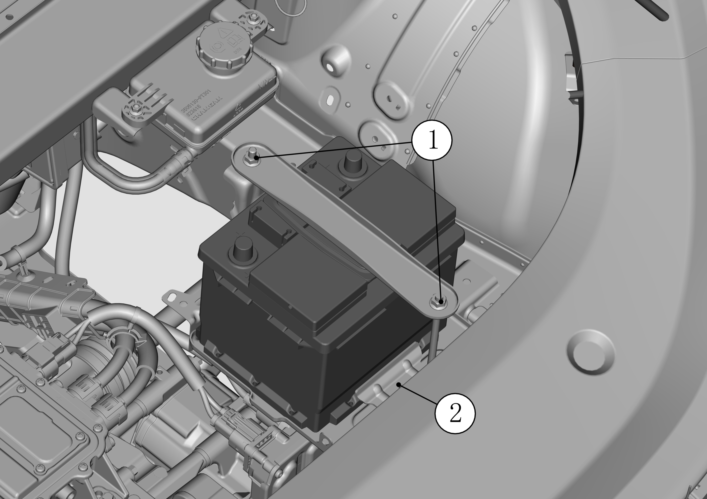

Аккумуляторная батарея
-
Перед сваркой с помощью гаечного ключа под болт M8 демонтируйте ① провод отрицательной клеммы аккумуляторной батареи и ② блок предохранителей положительной клеммы аккумуляторной батареи, как показано на рисунке ниже:

-
При выполнении огневых работ вблизи аккумуляторной батареи с помощью гаечного ключа под болт M8 демонтируйте ① верхнюю прижимную планку аккумуляторной батареи и ② прижимную пластину аккумуляторной батареи, после чего извлеките аккумуляторную батарею;

-
В процессе эксплуатации батареи следует избегать: недозаряда, перезаряда, переразряда;
-
Внутреннее короткое замыкание батареи: у батареи с внутренним коротким замыканием при зарядке температура электролита поднимается быстро и превышает температуру нормальной батареи, напряжение и уровень заряженности (SOC) растут медленно, в конце зарядки напряжение низкое, при разрядке напряжение и SOC падают очень быстро, требуется своевременно заменить аккумуляторную батарею;
-
Необратимая сульфатация пластин: отсутствие зарядки в течение длительного времени после разряда батареи приводит к недозаряду, частому переразряду или глубокому разряду, в результате чего пластины длительное время находятся в полуразряженном или разряженном состоянии, уровень электролита низкий, верхняя часть положительных и отрицательных пластин долгое время не преобразуется в активную массу, а выравнивающая зарядка не проводится вовремя. Батарею с незначительной сульфатацией можно восстановить путем умеренного перезаряда и своевременного проведения выравнивающей зарядки, в тяжелых случаях требуется заменить аккумуляторную батарею.